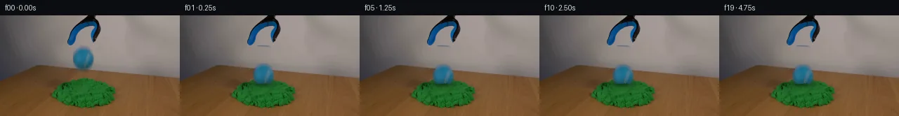

![首帧]()

Round 00
2026-11-04T20:39:27.162878+00:00像素候选变化代码 +197/−0inspection 更新
pixels 17c909b974412ca9 · code c8dc98e57d1cd607
查看本轮 generate.py 真实 diff
--- previous/generate.py
+++ current/generate.py
@@ -0,0 +1,197 @@
+"""PixelWorld continuation using only local source pixels and analytic dynamics."""
+from pathlib import Path
+import json
+import numpy as np
+from PIL import Image, ImageDraw
+from scipy.ndimage import map_coordinates, gaussian_filter
+from artifact_io import save
+
+ROOT = Path(__file__).resolve().parent
+SOURCE = np.asarray(Image.open(ROOT / 'first_frame.png').convert('RGB'))
+H, W = SOURCE.shape[:2]
+Y, X = np.mgrid[:H, :W].astype(float)
+SRC = SOURCE.astype(float)
+CX, CY, RX, RY = 118.5, 60.8, 15.6, 17.2
+
+
+def smoothstep(a, b, x):
+ u = np.clip((x-a)/(b-a), 0, 1)
+ return u*u*(3-2*u)
+
+
+def resample(a, sx, sy):
+ if a.ndim == 2:
+ return map_coordinates(a, [sy, sx], order=1, mode='nearest')
+ return np.stack([map_coordinates(a[..., c], [sy, sx], order=1,
+ mode='nearest') for c in range(a.shape[2])], -1)
+
+
+def edge(x):
+ return 75.1 + 0.097*(x-100)
+
+
+# Deskew the diagonal tabletop edge while interpolating source side strips.
+# This repairs only the small ball/blur footprint; all other plate pixels stay exact.
+left = np.mean([resample(SRC, np.full_like(X, float(xx)),
+ Y + edge(xx)-edge(X)) for xx in (98, 99, 100)], axis=0)
+right = np.mean([resample(SRC, np.full_like(X, float(xx)),
+ Y + edge(xx)-edge(X)) for xx in (136, 137, 138)], axis=0)
+lateral = np.clip((X-99)/38, 0, 1)[..., None]
+concealed = left*(1-lateral) + right*lateral
+repair_q = np.sqrt(((X-CX)/18.0)**2 + ((Y-CY)/20.7)**2)
+repair = 1-smoothstep(0.94, 1.02, repair_q)
+repair *= ((Y >= 43) & (Y <= 81))
+PLATE = SRC*(1-repair[..., None]) + concealed*repair[..., None]
+
+# Source RGB texture, soft edge matte, and local removal of background contamination.
+q = np.sqrt(((X-CX)/RX)**2 + ((Y-CY)/RY)**2)
+alpha_geo = 1-smoothstep(0.93, 1.045, q)
+red_alpha = np.clip((concealed[..., 0]-SRC[..., 0]) /
+ np.maximum(concealed[..., 0]-29, 1), 0, 1)
+rim_weight = smoothstep(0.76, 0.95, q)
+alpha = alpha_geo*(1-rim_weight) + np.minimum(alpha_geo, red_alpha)*rim_weight
+alpha *= ((Y >= 43) & (Y <= 79) & (X >= 101) & (X <= 135))
+foreground = np.clip((SRC - (1-alpha[..., None])*concealed) /
+ np.maximum(alpha[..., None], 0.025), 0, 255)
+PREMULT = foreground*alpha[..., None]
+
+# The drop is short on the measured tennis-ball scale, so impact occurs between samples.
+GRAVITY = 4100.0 # projected pixels / second squared
+CONTACT_SURFACE = 89.3
+CONTACT_CY = CONTACT_SURFACE-RY
+CONTACT_TIME = np.sqrt(2*(CONTACT_CY-CY)/GRAVITY)
+FINAL_CY = 85.5
+DAMPING = 14.0
+
+
+def motion(t):
+ if t <= CONTACT_TIME:
+ return CX, CY+0.5*GRAVITY*t*t, 0.0
+ u = t-CONTACT_TIME
+ settle = 1-np.exp(-DAMPING*u)
+ bx = CX+0.65*settle
+ by = CONTACT_CY+(FINAL_CY-CONTACT_CY)*settle
+ return bx, by, settle
+
+
+# Each field has compact support so unrelated scenery remains byte-identical.
+radial_q = ((X-119)/33)**2+((Y-102)/23)**2
+support = np.maximum(0, 1-radial_q)**3
+sand_mask = smoothstep(12, 38, SRC[..., 1]-SRC[..., 0])
+sand_mask *= smoothstep(14, 36, SRC[..., 1]-SRC[..., 2])
+sand_mask *= (Y >= 86)
+records = []
+frames = [SOURCE.copy()]
+records.append(dict(frame=0, time=0., ball_center=[CX, CY], sand_settle=0.,
+ stage='source / release'))
+for n in range(1, 20):
… diff truncated; 110 more lines …